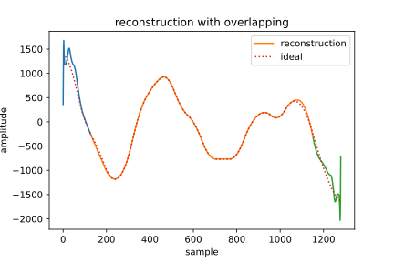

Figure 2: A dyadic 2-levels cascade of PRFBs.
NOTE: see if the transform is orthonormal. Otherwise, quantization should be used considering the subband gains.
InterCom transmits a stereo (two channels) PCM signal. In most cases, the channels are highly correlated (especially when the microphone is mono because both channels are identical), which means that we can find a more efficient representation. To perform this inter-channel decorrelation [3] we can use the linear transform [6]
| (1) |
that can be also written as
| (2) |
where is a stereo frame, is the (forward or analysis) transform matrix, and is the corresponding decomposition. In this particular transform, the decomposition has two subbands and , and each subband has only one coefficient. Notice that is a vector space1 .
The proposed matrix corresponds to the transform used in Mid/Side (M/S) stereo coding [1] that we will call MST (Mid/Side Transform). This is similar to the KLT (Karhunen-Loève Transform), the Haar Transform [8] and the Discrete Walsh-Hadamard Transform [5].
In general (for all the linear transforms), Eqs. 1 and 2 can be also expressed as
| (3) |
where denotes -th element of the -th row of the matrix .
A major difference between the transformed data and the original data is that the characteristics of the elements of are determined by their position within the decomposition [5]. Thus, as a consequence of how the matrix has been defined, the subband represents (very roughly) the low frequencies of , and the high frequencies. Therefore, the values of (the row 0 of ) describe a low-pass filter, the values of describe a high-pass filter, and represents the filters of a filter bank with two filters. This can be also seen in this notebook.
The inverse (or synthesis) transform
| (4) |
can be found from Eq. 1, where we get that
| (5) |
By solving (adding) and (substracting) in these equations, we obtain that
| (6) |
that in matrix form becomes
| (7) |
Therefore,
| (8) |
As can be seen (previously ignoring the scale factor) the inverse transform is the transpose of the forward transform (). This is a characteristic of all orthogonal transforms [5]. For the MST, specifically, it also holds that because is symmetric.
Apart from checking that , is orthogonal if the inner product2 of the filters3 of is between the different filters4 . In our case and , and as we can see
| (9) |
which means that the filters and are linearly independent5 .
Notice also that
| (10) |
which basically means6 that is proportional to the similarity between the input signal and the taps of the filter . These slides can help you with this key idea.
Orthogonality is important in compression applications because the correlation between subbands is 0, and therefore, the contributions of the subbands to the reconstruction of the original signal are independent7 . Another interesting property satisfied by a lot of famous transforms (such as the Fourier Transform) is orthonormality, which means that the transform is energy preserving [5] (or that the Parseval’s theorem is satisfied, in both, the analysis and the synthesis transform).
The MST analysis is not orthonormal, because
| (11) |
For this reason, we must divide the synthesized samples by (see Eq. 8). On the contrary, we would get as the reconstructed signal instead of .
Ideally, the quantization step used for a subband must operate in the RD curve with the same slope [9, 5] (this is the same to say that we must satisfy that , where denotes the derivative of ). The main drawback of this approach is that the finding of is computationally intensive (we must analyze, quantize, compress, decompress, dequantize, synthesize and compute the distortion of the data for a enoughly high number of quantization steps), and usually we cannot do that in real-time applications.8
An approximation to this could be to suppose that the RD curves of the subbands resulting from the analysis of our current piece of data (remember, two samples of a stereo frame in our case) are similar to the curves of previous pieces, that has already been compressed and transmitted, and therefore, we can compute also the distortion. Using this information, we can estimate a RD curve for the current piece, and find the quantization steps. This procedure is much faster than the described in the previou paragraph, but it may still be time-consuming.
For this reason, in the previous notebook we explore a different solution based on the idea of that the contribution (in terms of energy) of the subbands to the reconstruction of the signal is proportional to the gain of each analysis filter of (remember that we are working with orthogonal transforms and therefore, the contribution of the subbands are independent), or what is the same, proportional to the gain of each column of the syntesis matrix9 . Thus, if the filters had different gains, the quantization steps should consider this fact.10
By definition, the gain of the subband is the L norm11 of the filter (remember that for the MST, the rows of the analysis matrix are equal to the columns of the synthesis matrix). Thus
| (12) |
resulting that both subbands and have the same gain (). This result tell us that both subbands could use the same quantization step (). In the notebook there are some evidences of this.
Unfortunately, most of the transform are not implemented using matrix-vector operations, but using faster algorithms based on a lattice of computational bufferflies or filter convolutions (and therefore, we don’t know ). In general, we can determine simply by computing the inverse transform of the decomposition , where the value is in the position (only the subband , the rest are “zeroed”)).12 In our example, we get that
| (13) |
that as you can see, correspond to the columns of the inverse transform matrix . Notice that this is true for all the orthogonal transforms whose analysis and synthesis matrices are simmetrical.
After exploiting the spatial (stereo) redundancy in the previous milestone, the next natural step in the development of InterCom is to remove the temporal redundancy that can be found inside of each subband13 . As it can be seen in this notebook, most audio signals show “patterns” of samples that tends to repeat, especially locally. Another clear source of temporal redundancy is that the neighbor audio samples usually show similar amplitude values.
There are several techniques that can be used for removing the temporal redundancy of a sequence of audio. One of the most straightforward is Differential Pulse Code Modulation (DPCM) [5]. However, there are more efficient decorrelation algorithms based on transform coding, such as the used in the previous milestone and in this one.
Transform coding is based on the idea that we can decompose (we can generate a decomposition from) the input signal into a set of subbands, and if the used filters are the adecuate ones for removing the temporal redundancy, we can achieve a high transform coding gain [5], accumulating most of the signal energy (and presumably most of the information) in a small number of subbands. When this happens, the quantization of the subbands will remove basically the least significant information (usually electronic noise), allowing better compression ratios than those in which we apply the same quantization process to the original samples.14
The name that has been given to the previous process is subband coding. In this context, our analysis transform matrix (see the previous milestone) represents the taps of a 2-channels analysis Filter Bank (FB) [8], and the forward transform is in fact “descomposing” into two subbands and (see the Figure 1, and this notebook). On the other hand, the synthesis transform matrix denotes the taps of the corresponding synthesis FB that allows to recover (notice that in the figure, , , , , , , and ).
Let’s suppose now that the analysis filters (represented by the taps of) and are applied to the input signal (now a sequence of samples) using a convolution (without splitting into blocks). Let’s also suppose (as happens in the MST) that is a low-pass filter and is a high-pass filter, and that the transfer function15 of both filters are one the inverse of the other. Under these assumptions, the complete (analysis/synthesis) transform is called a (2-channels) Perfect Reconstruction Filter Bank (PRFB), and can be recovered (perfectly) from a subsampled version (in this case decimating by 2) of and (see the notebook). Notice that this subsampling is possible because the aliasing16 generated in the low-pass subband is compensated by the aliasing generated in the high-pass subband. To achieve this, the frequency response of must be equal to the mirrored frequency response of , and obviously, both filters must have the same bandwidth [5]. In this situation, in which and are mirror filters, we say that they form a Quadrature Mirror Filters (QMF) Bank.
Using the suitable filters, it is possible to build -channels PRFBs.17 These filters can analyze (and synthesize) the signal , decomposing it in (almost for sure) overlaping frequency subbands with different bandwidth. The question here is to know how many filters should be used and what pass-band width should they have. At this design point, we must also consider that the accuracy of the humman perception of the sound depends on the frequency: (as it can be checked in this notebook) we are more sensitive to frequency variations when the frequency of the sound is low. This fact is related with the way in which the critical bands are distributed in the bark scale.
As it can be seen, the bark scale divides the audible spectrum into 24 subband of (a priori) “whimsical” bandwidths. However, it’s clear that a dyadic partition of the spectrum fits better than a lineal partition. Considering this reason, from all the families of transforms designed to date, the most suitable one, from a frequency partitioning point of view, is the Discrete Wavelet Transform (DWT).
The DWT has also other interesting features:
It is fast (, where is the number of “transformed” samples).
It can represent efficienty transient signals, which can happen frequently in audio.
Although we are not going to take advantage of the following characteristic (for now), one of the most interesting features of the DWT is that it can used to find a multiresolution representation of the signal.
The DWT can be implemented in different ways:
Defining the transform matrix (see these slides) and computing vector-matrix multiplications, which requires a calculation time proportional to . However, the main problem of this type of implementation is generated by the amount of memory that requires, that is proportional to .
Cascading PRFBs (see the Figure 2). Considering that the convolution is a operation (if it is implemented in the frequency domain), and that the number of levels in the cascade is generally small (5 for example), this implementation is faster than the based in vector-matrix arithmetic. And most importantly, we don’t need to store , but only the taps of the filters that in a software implementation of a cascade can be as small as the number of different filters.18
Using lifting [7], which provides an extra speed-up factor of 2 compared to the FB implementation. DWTs implemented with lifting do not need to downsample and upsample the subbands, an operation that is wasting the calculus of half of the coefficients at each level of the cascade.
In order to clarify the previously introduced concepts, let’s build a DWT using the MST filters and lifting.
Lifting is based on the concept of dyadic multiresolution analysis, and also with the so called polyphase representation of signals. In order to do that, we can rewrite the MST filter equations (our and filters in the previous milestone) as
| (14) |
where the -th subband , being the number of samples in , and where, by definition, , the original resolution level of the signal. The subbands and computed by Eq. 14 are the same than the decimated subbands computed by a 1-levels PRFB (based on that filters), and we say, therefore, that Eq. 14 computes the 1-levels DWT.
Based on the 1-levels DWT, we define the 2-levels DWT as
| (15) |
that, as we can see, uses as input the output of Eq. 14.
In general, for a -levels DWT, we get
| (16) |
The -levels DWT splits the signal spectrum in subbands. If (where ), we have the spectrum partition
where19 it holds that
| (17) |
i.e., the number of DWT coefficients is also .
DWT performs a number of lifting steps, each one with 2 (sub)steps:
A predict step, that computes the subbands as a prediction error (that in general should be minimized) between the even samples (usually, the values used to predict) and the odd samples (usually, the values predicted). For the MST filters, we have that (see Eq. 16)
| (18) |
An update step, which computes the subbands considering (only) the even samples and the prediction errors. For the MST, we have that (see also Eq. 16)
| (19) |
Notice that these steps are invertible:
| (20) |
In the context of the wavelet theory [2], the response of the analysis low-pass filter ( in the MST) to the unit impulse20 is known as the scaling function and is usually denoted by , the response of the analysis high-pass filter () is known as the wavelet function and it is usually denoted by , the response of the synthesis low-pass filter () is denoted by and the synthesis high-pass filter () is represented by .
For the MST it holds that , and , and this is also true for all orthogonal DWTs. Another important characteristic of orthogonal DWTs is that the filters cannot be symmetric.21
The previous MST-based DWT is similar to other transforms such as the Haar transform, in which we are using an 1-order predictor for removing the temporal redundancy. Let’s extend the idea of lifting to a prediction of order two. For that, we define the predict step as
| (21) |
and the update step as
| (22) |
where the factor is used to preserve the energy [7]. This transform is known as the biorthogonal (2,2) of Cohen-Daubechies-Feauveau, and also as the linear transform. Biorthogonal22 filters can be easely recognized because they are always symmetric. When the filters of the PRFB are biorthogonal, they also satisfy that and .
The linear transform is also invertible by simply reversing the steps:
| (23) |
Transform coding implies to split the signal into blocks of data (chunks), and to compute the transform of each chunk. When the output coefficients are quantized, it is possible that significative (and unpleasant) distortions may appear in the border frames of the chunks (see Fig 3). This is a consequence of that in the prediction step used by the DWT in the limits of the chunks generate different predictions at the beginning and the end of the chunks.
 |  |
 |  |
One solution to avoid signal discontinuitites between chunks is to overlap the chunks. Thus, the current (-th) chunk uses also the last frames of the previous (-th) chunk and the first frames of the next (-th) chunk to compute the transform of the current extended (-th) chunk (see the Fig. 4). This has been described in the following algorithm:
, a zero chunk.
Input .
For :
Input .
Build extended chunk , where denotes the concatenation of chunks, is the overlapped area size in frames, the last frames of chunk , and are the first frames of the chunk .
Compute decomposition , where is the number of levels of the DWT ( in the Fig. 4).
Output decomposition .
(notice that we can assign the pointers, not the contents).
.
Notice that we are following the NumPy [?, ?] slicing notation.
For :
Input decomposition .
Compute extended chunk .
Output chunk .

This idea has been implemented in this notebook, and the result can be seen in the Fig. 3.
Unfortunately, the previous algorithm sends twice the DWT coefficients of the overlapped areas (in the Fig. 4, ). To avoid this waste of bandwidth, we can reuse the received coefficients of the overlapped areas. This procedure has been described in the Fig. 5, and, as it can be seen, the encoding algorithm is identical to the previous one except in that only the central (stereo) coefficients are sent. The rest of coefficients that are needed to compute the inverse transform are extracted from the neighbor chunks (represented in the DWT domain). Notice that now, the number of sent coefficients is , the number of samples in .
The codec now can be described by:
, a zero chunk.
Input .
For :
Input .
Build extended chunk .
Compute decomposition .
Output decomposition subset .
.
.
This decoder ignores the adjacent chunks in the DWT domain, but notice that it uses the right coefficients (those computed using overlapping chunks). This should provide reconstructions of the chunks with a higher quality that in the previous milestone.
For :
Input decomposition subset .
Compute chunk .
Output .
.
Input decomposition .
For :
Input decomposition .
Build extended decomposition .
Compute extended chunk .
Output .
.
.
As we did in the previous milestone, generate the RD curves for a set of simulated transmission contexts. Use the modules stereo_MST_coding{|_16|_32}.py. As you can see, they differs in how the transform has been implemented.
Rebuild the RD curves considering also the temporal decorrelation. Use temporal_no_overlapped_DWT_coding.py. Notice that the number of levels of the DWT (computed using PyWavelets [4]) can have a high impact on the amount of energy concentration achieved by the DWT, and therefore, on the efficiency of coding system. Show such impact. Experiment also with the wavelet name.
Visualize the effects (in the DWT domain) of quantization.
qjackctl & # Select sampling frequency 44100 Hz python temporal_overlapped_DWT_coding.py -i 6 -o 6 --show_stats -q 8192 # Connect the output of temporal_overlapped_DWT_coding.py to the input of dwt5.py python dwt5.py -d 9
In a module named temporal_overlapped_DWT_coding.py, inherit from temporal_no_overlapped_DWT_coding.py the class Temporal_No_Overlapped_DWT, and create a class named Temporal_Overlapped_DWT which must implement the codec described in the Section 1.5.
Build the RD curves to see how this improvement impacts on the efficiency of intercom.
Determine which decoder is better from the RD perspective.
Which is the latency of the encoder and the decoders, measured in chunk-times?
A description of the experiments and the results proposed.
[1] M. Bosi and R.E. Goldberd. Introduction to Digital Audio Coding and Standards. Kluwer Academic Publishers, 2003.
[2] C.S. Burrus, R. Gopinath, and H. Guo. Wavelets and Wavelet Transforms. Rice University, 2013.
[3] A.B. Downey. Think Stats Probability and Statistics for Programmers. O’Reilly, 2011.
[4] G. Lee, R. Gommers, F. Waselewski, K. Wohlfahrt, and A. O’Leary. PyWavelets: A Python package for wavelet analysis. Journal of Open Source Software, 4(36):1237, 2019.
[5] K. Sayood. Introduction to Data Compression. Morgan Kaufmann, 2017.
[6] G. Strang. Linear Algebra and Its Applications. Belmont, CA: Thomson, Brooks/Cole, 2006.
[7] W. Sweldens and P. Schröder. Building Your Own Wavelets at Home. Wavelets in Computer Graphics, 1997.
[8] M. Vetterli and J. Kovačević. Wavelets and Subband Coding. Prentice-hall, 1995.
[9] M. Vetterli, J. Kovačević, and V.K. Goyal. Foundations of Signal Processing. Cambridge University Press, 2014.